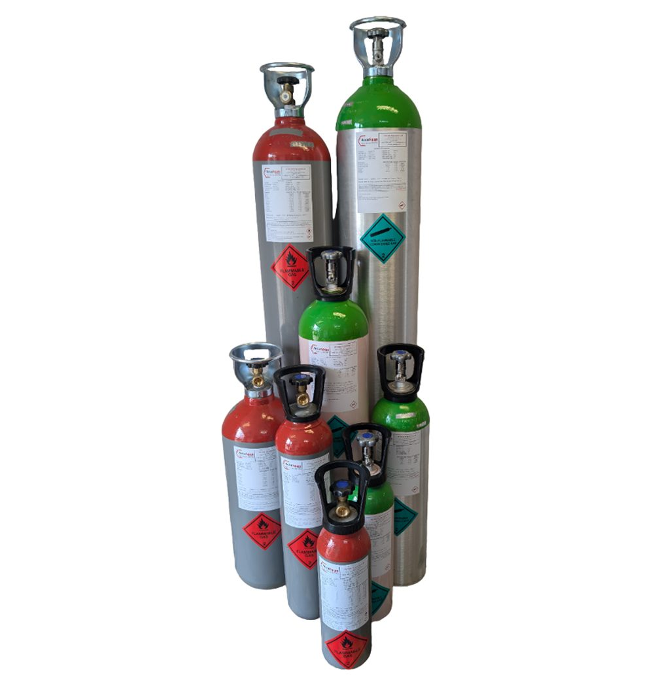
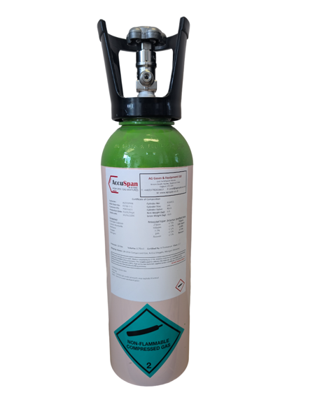
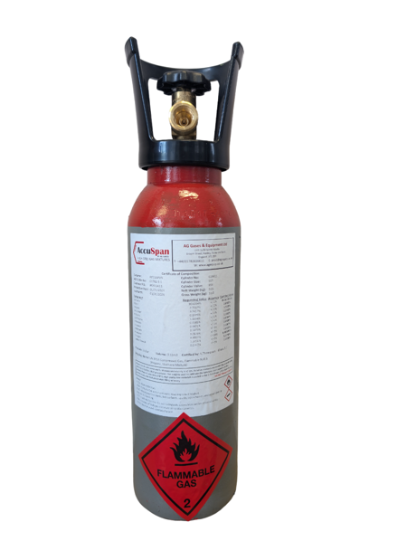
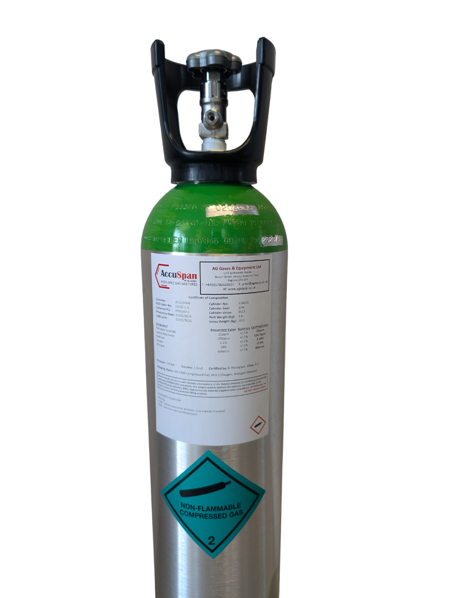
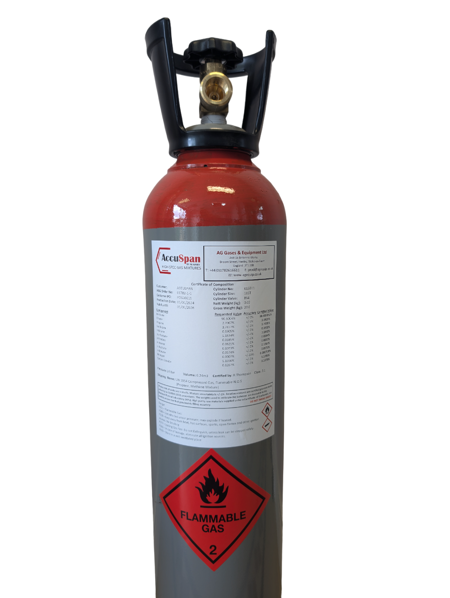
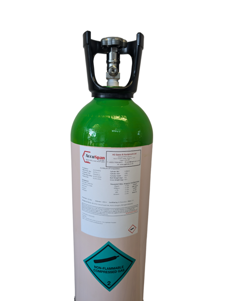
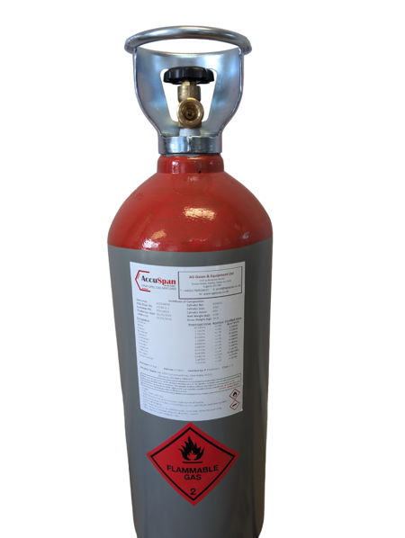
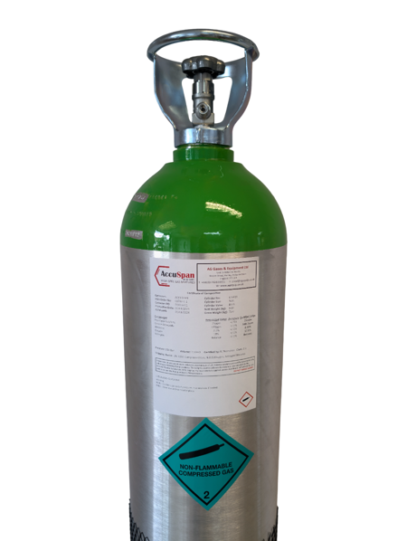
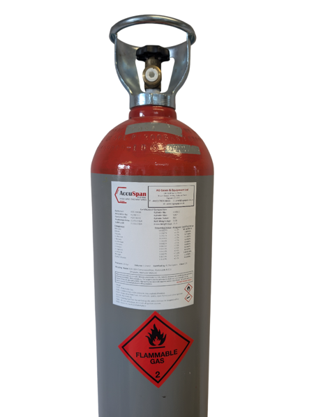

High Pressure Refillable Cylinders (HPC)
5 to 50 ltr · steel or aluminium
AccuSpan offers a comprehensive range of mixtures supplied in either steel or aluminium high-pressure cylinders to meet your specific needs.
- BS, CGA or DIN valve
- Manufactured to ISO7866

Cylinders can be supplied with either British BS valve, USA CGA or European DIN valve and are manufactured to ISO7866.
Relative mixtures are certified gravimetrically adhering ISO9001:2015 procedures. The weights used to calibrate the balances are traceable to the National Physics Laboratory (NPL). High purity raw materials supplied under a certificate of conformity are used to ensure the final gravimetric filling accuracy.
AccuSpan also can supply certain liquid mixtures. Please contact us about any specific needs you may have.
HPC Cylinder Range
AccuSpan can supply a complete range of HPC cylinders from 5 litre water volume to 50 litre water volume in both Aluminium and Steel cylinders.
| Type | Material | Water Capacity | Gas Volume | Service Pressure | Height | Diameter | Weight |
|---|---|---|---|---|---|---|---|
| 5ST | Steel | 5 ltr | 750 ltr | 150 bar | 480mm | 140mm | 9kg |
| 5AL | Aluminium | 5 ltr | 750 ltr | 150 bar | 505mm | 150mm | 8kg |
| 10ST | Steel | 10 ltr | 1500 ltr | 150 bar | 690mm | 160mm | 16kg |
| 10AL | Aluminium | 10 ltr | 1500 ltr | 150 bar | 700mm | 175mm | 14kg |
| 20ST | Steel | 20 ltr | 3000 ltr | 150 bar | 835mm | 200mm | 28kg |
| 20AL | Aluminium | 20 ltr | 3000 ltr | 150 bar | 990mm | 200mm | 25kg |
| 50ST | Steel | 50 ltr | 7500 ltr | 150 bar | 1520mm | 230mm | 70kg |
| 50AL | Aluminium | 50 ltr | 7500 ltr | 150 bar | 1550mm | 250mm | 57kg |

5AL
The 5AL HPC cylinder is fitted with a BS valve and filled to 150 bar for use with both reactive and non-reactive gases. The cylinder can also be supplied with either CGA or DIN valves upon request.

5ST
The 5ST HPC cylinder is fitted with a BS valve and filled to 150 bar for use mainly with non-reactive gases. The cylinder can also be supplied with either CGA or DIN valves upon request.

10AL
The 10AL HPC cylinder is fitted with a BS valve and filled to 150 bar for use with both reactive and non-reactive gases. The cylinder can also be supplied with either CGA or DIN valves upon request.

10ST
The 10ST HPC cylinder is fitted with a BS valve and filled to 150 bar for use mainly with non-reactive gases. The cylinder can also be supplied with either CGA or DIN valves upon request.

20AL
The 20AL HPC cylinder is fitted with a BS valve and filled to 150 bar for use with both reactive and non-reactive gases. The cylinder can also be supplied with either CGA or DIN valves upon request.

20ST
The 20ST HPC cylinder is fitted with a BS valve and filled to 150 bar for use mainly with non-reactive gases. The cylinder can also be supplied with either CGA or DIN valves upon request.

50AL
The 50AL HPC cylinder is fitted with a BS valve and filled to 150 bar for use with both reactive and non-reactive gases. The cylinder can also be supplied with either CGA or DIN valves upon request.

50ST
The 50ST HPC cylinder is fitted with a BS valve and filled to 150 bar for use mainly with non-reactive gases. The cylinder can also be supplied with either CGA or DIN valves upon request.
We can also supply with BS, CGA and DIN valves to meet your needs.
Gases Supplied in HPC’s
Air
Allene
Ammonia
Argon
Butane
Butene 1
Butene Cis 2
Butene Trans 2
1,3 Butadiene
Carbon Dioxide
Carbon Monoxide
Carbonyl Sulphide
Chlorine
Cyclopropane
Deuterium
Dimethylamine
Dimethyl Ether
Ethane
Ethyl Acetylene
Ethyl Chloride
Ethylene
Helium
Hydrogen
Hydrogen Chloride
Hydrogen Sulphide
Iso-Butane
Iso- Butylene
Krypton
Methane
Methyl Acetylene
Methyl Chloride
Methyl Mercaptan
Mono Ethylamine
Mono Methylamine
Neon
Neo pentane
Nitric Oxide
Nitrogen
Nitrogen Dioxide
Nitrous oxide
Oxygen
Propane
Propylene
R- (Halocarbons)
Sulphur Dioxide
Trimethylamine
Xenon
Shelf-Life Table
AccuSpan offer industry leading shelf life for its range of HPC products.
| Gas Mixture Shelf-life | Aluminium HPC | Steel HPC |
|---|---|---|
| Non-Reactive / LEL Mixtures | 60 Months | 60 Months |
| SF6, Nitrous Oxide and Halocarbons | 60 Months | 60 Months |
| Carbon Monoxide (CO) | 60 Months | 24 Months |
| Benzene | 24 Months | 24 Months |
| Alcohols | 36 Months | 12 Months |
| Hydrogen Sulphide (SO2) | 24 Months | 24 Months |
| Chlorine (Cl2) (min 5ppm) | 12 Months | 12 Months |
| Hydrogen Chloride (HCl) | 12 Months | 12 Months |
| Nitrogen Dioxide (NO2) | 7 Months | 12 Months |
| Ammonia (NH3) | 18 Months | 12 Months |
| Hydrogen Cyanide (HCN) | 18 Months | N/A |
| Sulphur Dioxide (SO2) | 24 Months | 12 Months |
| Sulphur Dioxide combined with CO and NO) | 7 Months | 7 Months |
| Nitric Oxide (NO) combined with CO and SO2) | 18 Months | 18 Months |
| Chlorides | 12 Months | 12 Months |
| Dienes (e.g 1,3 Butadiene, Styrenes and Mercaptans) | 24 Months | 12 Months |
| ETO, SiH4. Aldehydes (acetone, DME and MTBE) | 12 Months | 12 Months |
Tolerances
| High Pressure Cylinders (HPC) | Mixture Tolerance | Certified Accuracy |
|---|---|---|
| 1.0 ppm to 4.9 ppm | 20% | 1% |
| 5.0 ppm to 19.9 ppm | 10% | 1% |
| 20.0 ppm to 50.0 ppm | 10% | 1% |
| > 50ppm | 2% | 1% |